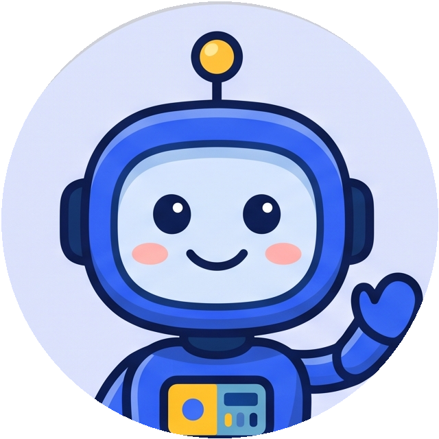
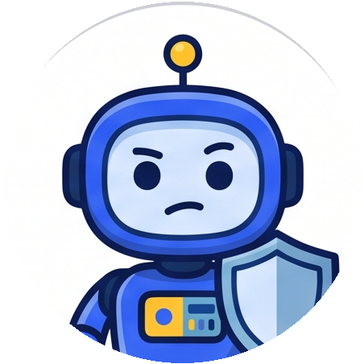

Sem pressa
Você pode reler, voltar e pedir explicações quantas vezes precisar, sem ninguém apressar você.
Deixe esta página do jeito mais confortável para os seus olhos:
Muita gente sente receio de mexer no celular por medo de apagar algo importante ou apertar o botão errado. O Memora foi criado para acabar com esse medo: ele é um companheiro paciente de bolso feito para ajudar você a ganhar autonomia de verdade.
Em vez de fazer tudo escondido no seu lugar, o aplicativo explica cada etapa em português simples e deixa você no comando o tempo inteiro.
“Eu mostro o caminho e você faz. E não faço nada sem te avisar antes.”
Você pode reler, voltar e pedir explicações quantas vezes precisar, sem ninguém apressar você.
Todo desenho tem legenda escrita em português e cada botão tem tamanho confortável para tocar com o dedo.
Este site serve somente como guia de leitura: ele não pede cadastro, não pede senha e não acessa sua conta.
Você não precisa decorar códigos cheios de símbolos difíceis. No Memora, você entra usando seu telefone ou e-mail e uma Frase Secreta que faça sentido na sua vida, como uma lembrança de família.
Que bom ver você por aqui
Tem uma dúvida sobre como mandar um áudio, achar uma foto da família ou silenciar uma notificação? Toque em Conversar com a Memora e pergunte com as suas próprias palavras.
Ela responde com frases curtas, em passos fáceis, sem palavras complicadas.
Quer lembrar o que você aprendeu ou conferiu mais cedo? Na tela de Atividades, o Memora anota de forma clara tudo o que foi ensinado ou aberto, com data e horário, para você conferir quando quiser.
Acesso organizado para conversar e ver lembranças em aplicativos como WhatsApp, Telefone e Fotos.
Atalhos explicados passo a passo para Gov.br, serviços de aposentadoria e atendimentos de saúde.
Antes de abrir qualquer aplicativo de fora, o Memora mostra uma tela calma de aviso explicando que você vai sair dele por um momento — assim a tela não muda de repente e você sabe sempre como voltar.
Você está indo para o WhatsApp
Na aba Ajustes, você aumenta o tamanho da letra, alterna entre fundo claro, escuro ou alto contraste e escolhe a cor que acha mais agradável — tudo parecido com os botões no topo deste guia.

Escolher foto de perfil
Quando usada com a pulseira de cuidado do projeto, a tela mostra seus batimentos em números grandes e fáceis de ler, dizendo com clareza se o ritmo está estável.
Você está bem? (45 segundos)

Toque em qualquer pergunta abaixo para abrir ou fechar a resposta. Não tenha receio: perguntar sempre ajuda a usar o celular com mais segurança.
Ações importantes — como apagar a foto, limpar conversas ou sair — sempre pedem confirmação na tela antes de acontecer. Se você tocar em “Não” ou cancelar, nada muda.
O aplicativo continua funcionando normalmente sem usar câmera nem suas fotos. Se preferir, escolha na hora um dos avatares ilustrados da Memora ou deixe apenas as suas iniciais.
A foto ou o avatar que você escolhe em Meu perfil ficam guardados apenas dentro do próprio aparelho em que você está usando, vinculados somente à sua conta naquele celular.
Sim para os recursos locais: no aplicativo, você continua abrindo seus ajustes, seu perfil e seu avatar mesmo sem internet (apenas conversar com a assistente pede conexão). Já este guia de leitura aberto ou salvo no aparelho funciona inteiramente sem internet.
Este guia é totalmente fechado e não abre páginas externas sozinho por segurança. Para começar a usar o aplicativo no celular, procure o ícone azul da assistente Memora na tela do seu aparelho ou peça a um familiar para instalar com você em um momento calmo.
Deixe a pessoa segurar o celular e tocar na tela enquanto você acompanha ao lado. Escolham juntos a Frase Secreta e lembre que o objetivo é dar autonomia, nunca substituir quem usa.